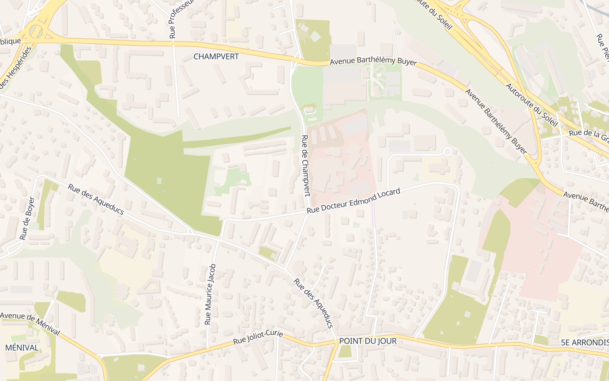

En balade
Repérez le lieu sur la carte, puis consultez rapidement les espèces observées et leurs images animées.
Carte pratique
La carte réelle du secteur pour vous orienter sur place.

Espèces observées
Choisissez un oiseau pour ouvrir sa fiche, puis faites défiler ses images et vidéos.
Aucune espèce ne correspond à cette recherche.
Chargement en cours...
Pour une expérience immersive de balade, visitez le site depuis votre ordinateur.
Version immersive